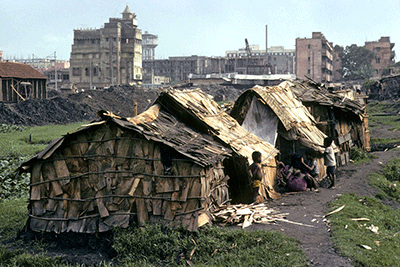
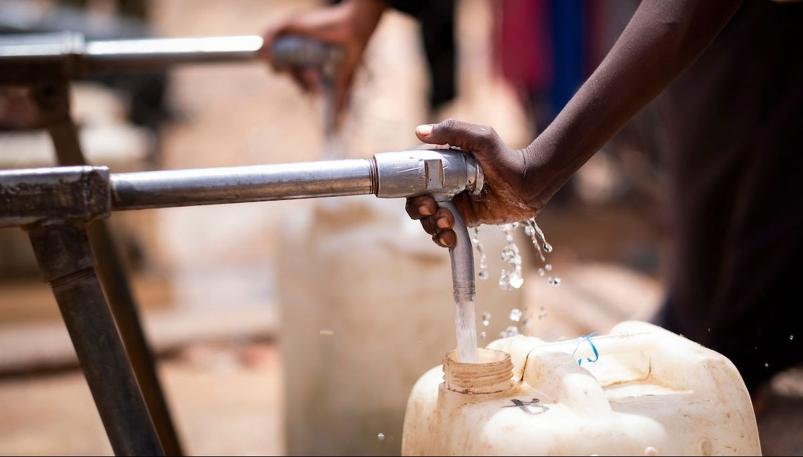

The Five Goals are.

Goal 1
End Poverty In All Its Form
Economic growth must be inclusive to provide sustainable jobs and promote equality.

Goal 2
Zero Hunger
The food and agriculture sector offers key solutions for development, and is central for hunger and poverty eradication.

Goal 3
Health
Ensuring healthy lives and promoting the well-being for all at all ages is essential to sustainable development.

Goal 4
Education
Obtaining a quality education is the foundation to improving people’s lives and sustainable development.

Goal 5
Water And Sanitation
Clean, accessible water for all is an essential part of the world we want to live in.